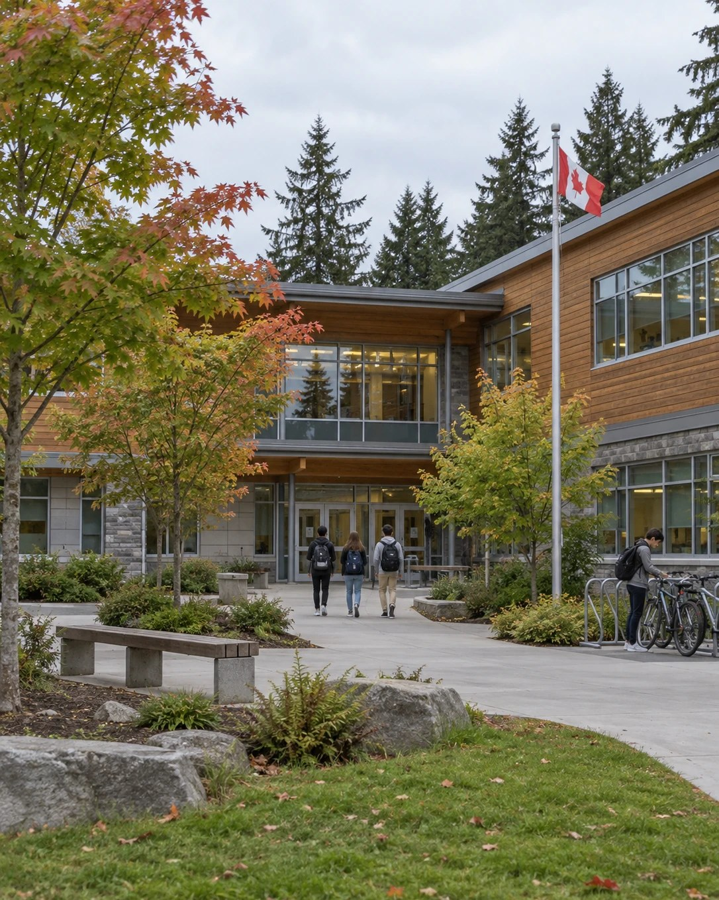
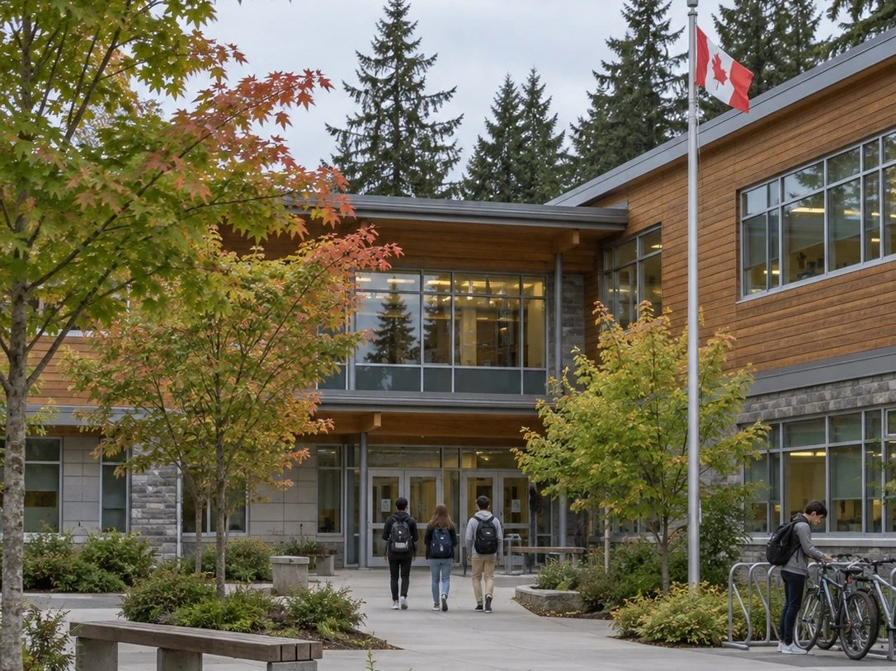

Core English
For all students
- Practical, project-based English
- Presentations, communication and teamwork
- Small groups by level

From first steps in English to studying at schools abroad.
Discover every way to learn and live English with Interlanguage.


From first steps in English to the end of school: one path, with a programme for every stage.
Where we begin
Right through school
Songs, games and first conversations to get familiar with English.
Summer camps in Madrid · After-school English at schoolMore vocabulary and confidence to take part, ask questions and share ideas.
After-school English at school · Summer camps in Madrid and abroadConversations, new challenges and greater independence to communicate.
Summer camps abroadExplore schools in the United Kingdom, Ireland, the United States or Canada. We help you choose the one that best matches what you are looking for.



Who they are, what interests them and what you hope for from this experience.
A close team with sound judgement, present in Madrid and London.
Their profile, their interests and your priorities as a family.
Schools that suit them, with the reasons for each proposal.
Admission and the arrangements included in the programme you choose.
Tell us what you are looking for and we will help you find the best option for your child.With their age, school year and what interests you, we guide you on destination and option. It is a conversation, with no obligation.
Enquiry about
BackYour call is booked. We will call you on the number you gave us.
Cancel the call If you can't take the call, cancel it and book another time.
Daily challenges in English based on the eight multiple intelligences, with 100% native monitors and age-based groups. Using the TalenTalk® method, which we have applied since 2002.
There is no open edition yet: we will publish the dates, venue and fees here once they are confirmed.

To be confirmed
There is no open edition yet.
To be confirmed
We will publish them here along with the dates.
Eight different challenges, a discovery each day; each challenge works on a different intelligence.
And a surprise challenge every day.
Two different formats, each designed for the right stage.

Guided play, a gentle pace and first steps in each intelligence, in age-based groups.

More independence: each day they choose between several challenges, in groups organised by age and level.

English booklet, storytelling and arts & crafts
Snack and change of clothes for the water games
The most eagerly awaited activity of the day
We dry off and get ready to carry on
Drama, sport or experiments, depending on the day
Lunch and rest before pick-up
Timetable from the last edition; it will be confirmed with the next edition.
Not yet. Once they are confirmed, we will publish the dates, venue and fees here. If you would like to ask something before then, get in touch.
We work in age-based groups. The ages for the next edition will be confirmed along with the dates.
100% native monitors, trained to work with children.
When there is an open edition, we will explain how to enrol. Asking about the camp does not book or confirm a place.
Tell us your child’s age and what you are looking for, and we will guide you with no commitment.
Ask about the next campFrom summer camp in Madrid to spending a summer, or a whole school year, abroad. We support families at every stage of the journey.
22 June to 24 July
Five weeks. Choose any you like; they don't have to be consecutive.
Madrid
Sagrado Corazón Rosales and Sagrado Corazón Chamartín.
Pupils from other schools are welcome, you don't need to attend Sagrado CorazónThe total price depends on the number of weeks you choose, whether or not they are consecutive.
Optional lunch service: €52 per week, with a minimum of 25 children enrolled.
Choose the weeks, fill in the details and send us your request. We will check availability before confirming a place.
Classes with native teachers in small groups, throughout the school year. So that every pupil gains fluency and level speaking English.
If your child’s school is a different one, ask us about its timetable and fees.

Four things that happen in every session, whatever the focus.
They listen and speak in English from the very first moment, with native teachers.
They learn to say what they think and to stand up for their own ideas.
Progression tailored to their stage.
Games, projects and teamwork as a way of learning, not as a reward.
The same method, tailored to each pupil's stage. Ask which clubs run at your school.
Through play, building listening skills and their first conversations.
Lively role-play, short dialogues, stories and songs.
Focused projects that enrich their communication skills.
Real-life situations and active practice to boost their level.
Cambridge exams: KET, PET, FCE and CAE.
And when the time comes to take the leap, we are still by your side: a summer or a school year abroad, with the same team that already knows your child.
Each school stage has its own club, with goals and activities suited to it. Which year groups run depends on the school: ask us about yours.
By school stage, in small groups that open from 8 pupils, so everyone gets real time to speak.
Yes. All our teaching staff are native speakers, specifically trained to teach children and young people, not just to speak the language.
The programme runs from October to May, following the school calendar, in the afternoon at your child's own school.
At Colegio Sagrado Corazón, €65 a month plus €35 a year for materials. If your school is a different one, get in touch and we'll confirm the terms.
Tell us their year group and what you're looking for, and we'll guide you with no commitment.
Ask for guidanceOne to four weeks at British boarding schools, with English lessons every morning, afternoons of their choice, excursions and students from more than 20 countries.
2027 dates. Places at each school are limited.
British Council accredited programmes.
Stays last from one to four weeks, and the price depends on how many. They start on Sunday (Wednesday in England); each school’s dates are further down.
Extra night: … €, subject to availability. Afternoon supplements: horse riding, adventure, golf, discover the country and extra English.
What matters most to families, explained clearly.
Single or shared rooms, with shared bathrooms cleaned daily. A team lives with the students 24 hours a day, looks after passports, money and medicines, and gives medication on time.
Staff meet them at airport arrivals and take them to school by minibus from Edinburgh, Heathrow or Gatwick. The transfer costs extra.
How they travel: group flight from Madrid with an Interlanguage leader, or alone as an unaccompanied minor.
How and when they can talk to you during the camp.
Not used in lessons, activities, meals or overnight. Staff keep them safe; families can request otherwise in writing.
No alcohol, smoking or vaping. Boys and girls only mix in common areas. Zero tolerance of bullying.
English stops being a school subject and becomes the language of the whole day.
Every morning from 9:00 to 12:30, in small groups with qualified teachers. They learn by presenting, creating and working in teams.
They live alongside boys and girls from more than 20 countries. English is what they share.
Sport, outdoor adventure, golf, horse riding, art or discovering the country: each student picks their plan.
A team lives in the boarding house with the students: they know each one and look after them day and night.
Every student has 15 hours of English a week. Older students can choose the leadership programme.
For all students
Ages 14 to 17 · B1 level or above
The leadership programme runs at Dollar Academy; for other schools, please ask.
British boarding schools with residences, sports facilities and safe campuses. We help you choose the one that best suits their age and interests.
Dollar · 45 min from Edinburgh
The only school offering the leadership programme.
Perthshire · 1 h from Edinburgh
The only one that takes students from age 8.
Musselburgh · 8 min by train to Edinburgh
By the sea, with the longest season.
Godalming (Surrey) · 45 min from London
For those who want to discover London.
Single or shared rooms, with shared bathrooms. Cleaned daily.
Afternoons are for discovering new interests. Some options carry a supplement.

Football, tennis, basketball, swimming… whichever they prefer each day.

Team challenges, outdoor games and creative activities.

Kayaking, paddle boarding, archery and inflatable courses, with specialist instructors.

Lessons with a golf professional at a nearby course, for all levels.

For beginners and experienced riders: horse care, arena work and rides.

They write their own story, illustrate it and perform it.

Castles, landscapes, cities and beaches, with local culture and history.

Debates, presentations and writing, in groups of up to 5.
The same timetable at all four schools.
Approximate times. Older students go to bed at 23:00.
At weekends they go out to explore the country. During the week there are also half-day trips.
These are examples: destinations vary by school, dates and weather.
On the last day they receive their certificate at a graduation ceremony and design their own T-shirt, signed by the friends they have made.
per week
There is a tuck shop on campus and time for shopping on excursions. Staff keep the money safe.
Best to leave expensive items at home. If they take medicine or have allergies, let us know beforehand.
Age, English level, dates and interests.
With a fixed price and what it includes.
With a 10% deposit; the rest by 15 May 2027.
Paperwork, packing and flights, so they travel with peace of mind.
Cancellation: up to 30 days before arrival, everything is refunded except the deposit; after that, there is no refund.
From age 8 at Strathallan School and from 10 at the other three schools, up to 17.
No particular level: lessons are in small groups by level. The leadership programme requires B1.
They can choose a single or shared room. Bathrooms are shared and cleaned daily.
The camps welcome students from more than 20 countries, so English is everyone’s language.
Yes, in their free time. Not in lessons, activities, meals or overnight.
The boarding team looks after them and lets you know. That is why medical insurance is compulsory.
Minibus transfers run from Edinburgh, Heathrow and Gatwick, at extra cost. Staff wait at arrivals with a sign.
As soon as possible: places are limited and full payment is due by 15 May 2027.
Tell us their age, their level and the dates you have in mind, and we will suggest the school that fits best. Our guidance is free.
Ask for guidanceIf they love the camp, the next step could be a term or a school year abroad.

We look with you for the right school for your child and support you at every step, from the first conversation to their arrival.
What matters is finding the right school for your child. Tell us what you are looking for and the budget you have in mind, and we will suggest the destinations and schools that fit best.

Academic tradition and a full school life.
Boarding starts at age 7 at one preparatory school; other schools start in later school years. Places for one or two terms are limited.
Admission may include reports, an interview, a taster day or an English assessment. Some schools require a guardian living in the UK; check the boarding opening days.

Learn English by sharing local life.
Boarding may cover 5, 5½ or 7 days. Some boarding schools close at weekends. The day-school option allows pupils to stay with a host family.
The entry year and places for full school years or term stays are confirmed with the school.

Options on request
We study them case by case, according to your child’s age, school year and the dates you have in mind.

Options on request
We study them case by case, according to your child’s age, school year and the dates you have in mind.
To help you get your bearings. We assess each school with you: admission, dates and places depend on each school.
| Criterion |  | |
|---|---|---|
| Age and school year | Ages 7 to 18From age 7 at one prep school; other schools admit later years. | Ages 10 to 18In secondary school. The exact school year is confirmed with each school. |
| Accommodation | BoardingAt the school itself. Opening days and weekends depend on the school. | Boarding or host familyBoarding of 5, 5½ or 7 days, or a day school with a host family. Some boarding schools close at weekends. |
| Length of stay | Full school yearThe usual option. There are also schools that accept one or two terms, with limited places. | Full school year or termsAvailability for each length of stay is confirmed with the school. |
| Type of school | Independent and co-educationalBoarders and day pupils, in England and Scotland. | SecondaryBoarding or day. Most are co-educational; some are boys only or girls only. |
| English level and admission | Reports, interviews or assessmentsThis may include a taster day or an English assessment; each school sets its requirements. | Reviewed with each schoolBefore a place is proposed. |
| School life and activities | Evening and weekend activitiesFor boarders at several schools. They vary a lot from one school to another. | Team sport, music or cultureThey vary from one school to another. |
| Criterion | United Kingdom | Ireland |
|---|---|---|
| Area | South-west and north of England, east of ScotlandNear Edinburgh. England and Scotland have different curricula and exams. | Dublin and several countiesSouth, west and north-west. |
| English support | English as an additional language (EAL)Available at several schools, sometimes at extra cost. | To be confirmed with each school |
| Guardian | A responsible adult in the UKThey live in the country and some schools require one for international boarders. | To be confirmed with each school |
| Religious tradition | To be confirmed with each school | Some boarding schools have a religious traditionCatholic, Church of Ireland or Quaker. There are also community and multi-denominational day schools. |
| Academic continuity | Some schools offer the IBIn Sixth Form. How the school year corresponds is reviewed case by case. | Reviewed with each schoolAnd case by case. |
Returning to education in Spain depends on the school year completed and the stage of education. Check the official recognition or validation requirements for your case. Official information (in Spanish).
From the first conversation to the pupil’s arrival.
We talk about their profile and what matters to you.
You know what is included before you decide.
Schools that fit, with admission coordinated.
We support you right up to arrival.
Depending on the destination and the service you choose: the proposal details what is included and what is not. *Depends on the case.
Illustrative example · Not a real case
How we decide. We rule out schools that miss the essentials (Catholic tradition, places in their year and budget) and compare the rest on what matters most to you.
Shall we talk about your case?
Ask for guidanceTell us from the start what budget you have in mind: we take it into account when selecting schools. The cost depends mainly on:
The proposal details what is included and what is paid separately (travel, transfers, English support or accommodation during closures, where applicable).
Ask for guidanceClasses, living together and free time: school will be their everyday surroundings.

An education that joins theory and practice: pupils learn by taking part, with labs, projects and debates, and each pupil's development is looked after.
See admission and English level


Living away from home helps them mature. In boarding they learn to organise themselves and live alongside others; with a host family, the language and daily life carry on at home.
See accommodation by destination

Sport, music, drama, art and many other activities to discover new interests.
See activities by destination


In the United Kingdom, one preparatory school offers boarding from 7 to 13; others start in later school years and extend to 18. In Ireland the range is 10 to 18, with the entry year depending on the school. In the United States and Canada, options are available on request.
It depends on the destination, the length and the school. We detail it in the proposal, with what is included and what is paid separately.
We recommend starting one school year in advance, as places can fill up. If you contact us later, we check available places to see whether there is still a suitable option.
Yes. In the United Kingdom, some schools accept one or two terms, with limited places; others only the full school year. In Ireland, we arrange full school years and term stays. Availability is confirmed with the chosen school.
You don’t need to have decided. Tell us their age, school year and what you are looking for, and we will guide you, with no obligation.
No. It is a conversation so you have the information. The decision is yours.
Themed programmes that use a specific passion (drama, music or science) as a vehicle for practising English, for children who already have a foundation and want to take it further.
We are the Interlanguage team. For over 30 years we have been teaching English in Madrid, and we always work the same way: we get to know each pupil, listen to their family and follow their progress closely.
Ask for guidanceNo two pupils are the same, so we don't treat them as if they were.
Before suggesting anything, we talk to you and get to know the pupil: their level of English, their character and their interests.
We work in small groups so that everyone gets real time to speak English.
We follow their progress year after year and keep you close to the process.
Every family has one person who stays with them at every stage. If you need anything, you know who to talk to.
We began with English classes and summer camps. Over the years we have expanded our programmes to support children and young people from their first steps in English to experiences abroad, always with the same idea: a language isn't memorised, it's lived.
Tell us your child's age and what you're looking for. We'll explain which options fit and why, with no commitment.
Tell us their age, level and what you're looking for. Someone from the team will get in touch with you, with no commitment.
Ask for guidance